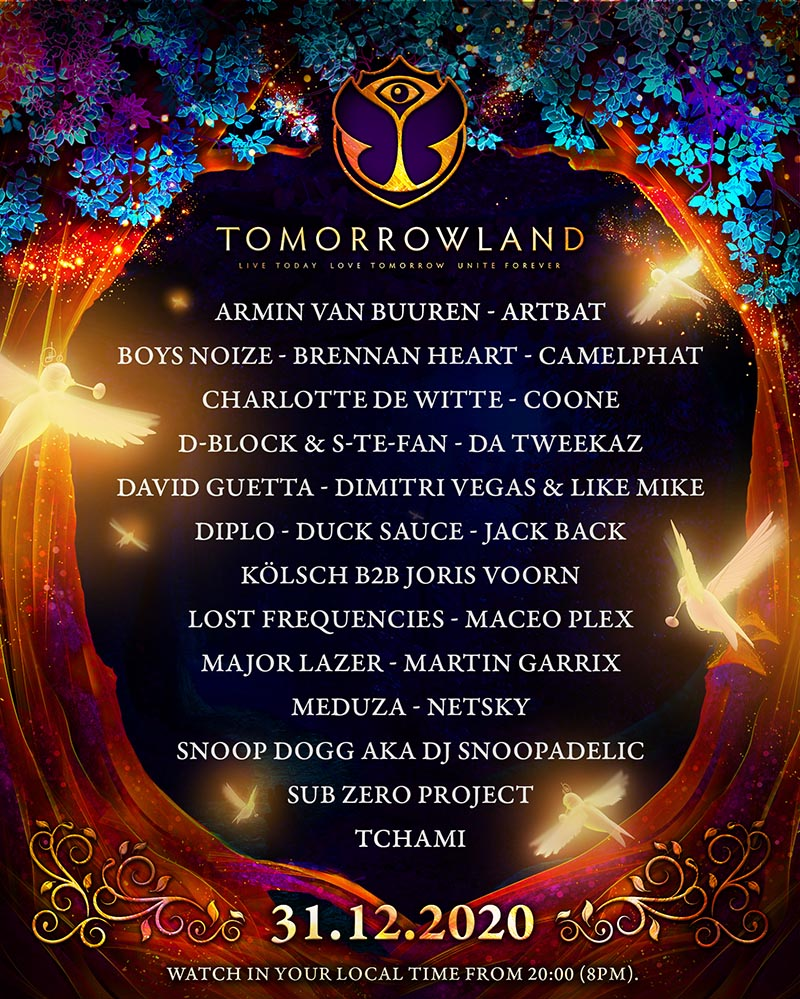

Para finalizar el año tendremos un ultimo concierto virtual con los mejores djs del mundo, la cuenta oficial de Tomorroland en instagram posteo:
Una celebración mágica al final de un año excepcional. Ingrese a un fascinante mundo digital, lleno de música, magia y amistad. Más de 25 de los mejores artistas del planeta actuarán en cuatro fascinantes escenarios digitales en
el nuevo lugar de entretenimiento digital.
Tomorrowland 31.12.2020 está adaptado a las 27 zonas horarias de todo el mundo y dará la bienvenida a personas de todas las edades y lugares, que no se inmuten por fronteras o límites. Míralo en tu hora local de 20:00 a 03:00 (8:00
p.m. a 3:00 a.m.). Donde quiera que se encuentre en el mundo, desde Fiji a Hawai, desde Tokio a Santiago,
El festival comienza a las 20:00 (8 p.m.) hora local, lo que brinda a personas de todo el mundo la oportunidad de terminar 2020 con una explosión. Las entradas saldrán a la venta el 17 de noviembre.
